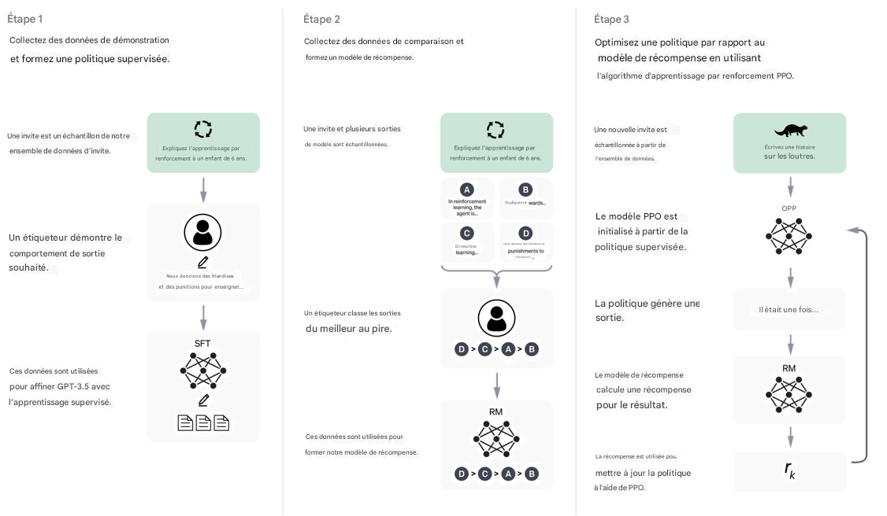

Methods
Nous avons formé ce modèle à l'aide de l'apprentissage par renforcement à partir de la rétroaction humaine
(RLHF), en utilisant les mêmes méthodes que
InstructGPT , mais avec de légères différences dans la configuration de la collecte de données. Nous avons
formé un premier modèle en utilisant
mise au point supervisée : des formateurs humains en IA ont fourni des conversations dans lesquelles ils ont
joué des deux côtés : l'utilisateur
et un assistant IA. Nous avons donné aux formateurs accès à des suggestions rédigées sous forme de modèles
pour les aider à composer leur
réponses. Nous avons mélangé ce nouvel ensemble de données de dialogue avec l'ensemble de données
InstructGPT, que nous avons transformé en un
format de dialogue.
Pour créer un modèle de récompense pour l'apprentissage par renforcement, nous devions collecter des données
de comparaison, consistant
de deux ou plusieurs réponses modèles classées par qualité. Pour collecter ces données, nous avons pris des
conversations que l'IA
les formateurs ont eu avec le chatbot. Nous avons sélectionné au hasard un modèle de message écrit,
échantillonné plusieurs alternatives
réussites, et les formateurs en IA les ont classés. En utilisant ces modèles de récompense, nous pouvons
affiner le modèle en utilisant
Optimisation de la politique proximale. Nous avons effectué plusieurs itérations de ce processus.

ChatGPT est affiné à partir d'un modèle de la série GPT-3.5, dont la formation a terminé début 2022. Vous pouvez
Apprenez-en plus sur la série 3.5 ici (ouvre dans une nouvelle fenêtre). ChatGPT et GPT-3.5 ont été formés sur un Azure
Infrastructure de supercalcul IA.
Limitations
ChatGPT écrit parfois des réponses plausibles mais incorrectes ou absurdes. Résoudre ce problème est
difficile, car : (1) pendant la formation RL, il n’y a actuellement aucune source de vérité ; (2) former le modèle à être
plus il est prudent, plus il refuse les questions auxquelles il peut répondre correctement ; et (3) une formation supervisée
induit le modèle en erreur car la réponse idéale dépend de ce que le modèle sait(opens in a new window), plutôt
que ce que sait le démonstrateur humain.
ChatGPT est sensible aux modifications apportées à la formulation d'entrée ou aux tentatives répétées de la même invite. Pour
Par exemple, étant donné la formulation d'une question, le modèle peut prétendre ne pas connaître la réponse, mais étant donné une légère
reformuler, peut répondre correctement.
Le modèle est souvent excessivement verbeux et abuse de certaines expressions, comme réaffirmer qu’il s’agit d’une langue.
modèle formé par OpenAI. Ces problèmes proviennent de biais dans les données de formation (les formateurs préfèrent les réponses plus longues
qui semblent plus complets) et des problèmes de suroptimisation bien connus.1, 2
Idéalement, le modèle poserait des questions de clarification lorsque l'utilisateur fournit une requête ambiguë. Au lieu de cela, notre
les modèles actuels devinent généralement ce que l'utilisateur voulait.
Bien que nous ayons fait des efforts pour que le modèle refuse les demandes inappropriées, il répond parfois à des demandes inappropriées.
instructions nuisibles ou présentent un comportement biaisé. Nous utilisons l'API de modération pour avertir ou bloquer certains
types de contenu dangereux, mais nous nous attendons à ce qu'il contienne des faux négatifs et positifs pour le moment. Nous sommes impatients de
recueillir les commentaires des utilisateurs pour nous aider dans notre travail continu visant à améliorer ce système.
Déploiement itératif
La publication de recherche d'aujourd'hui de ChatGPT est la dernière étape du déploiement itératif d'OpenAI de solutions de plus en plus sûres.
et des systèmes d’IA utiles. De nombreuses leçons tirées du déploiement de modèles antérieurs tels que GPT-3 et Codex ont éclairé le
des mesures d'atténuation de sécurité ont été mises en place pour cette version, y compris des réductions substantielles des contenus nuisibles et mensongers.
résultats obtenus grâce à l’utilisation de l’apprentissage par renforcement à partir de la rétroaction humaine (RLHF).
Nous savons que de nombreuses limitations subsistent, comme indiqué ci-dessus, et nous prévoyons de procéder à des mises à jour régulières du modèle pour l'améliorer.
dans
de telles zones. Mais nous espérons également qu'en fournissant une interface accessible à ChatGPT, nous obtiendrons de précieux utilisateurs
commentaires sur des problèmes dont nous ne sommes pas déjà conscients.
Les utilisateurs sont encouragés à fournir des commentaires sur les résultats problématiques du modèle via l'interface utilisateur, ainsi que sur les faux résultats.
positifs/négatifs du filtre de contenu externe qui fait également partie de l’interface. Nous sommes particulièrement
intéressé par les commentaires concernant les résultats nocifs qui pourraient se produire dans des conditions réelles et non conflictuelles, comme
ainsi que des commentaires qui nous aident à découvrir et à comprendre les nouveaux risques et les atténuations possibles. Vous pouvez choisir de
participez au concours de commentaires ChatGPT(s'ouvre dans une nouvelle fenêtre)3 pour avoir une chance de gagner jusqu'à 500 $ en crédits API.A
Les candidatures peuvent être soumises via le formulaire de commentaires lié à l'interface ChatGPT.
Nous sommes ravis de mettre en œuvre les leçons de cette version dans le déploiement de systèmes plus performants, tout comme
des déploiements antérieurs ont informé celui-ci.